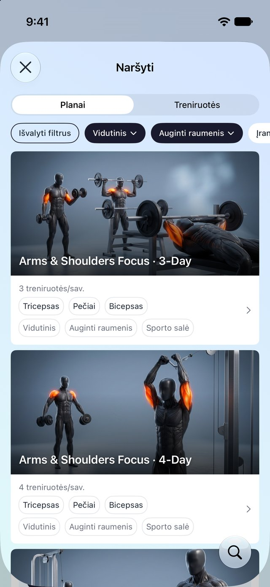
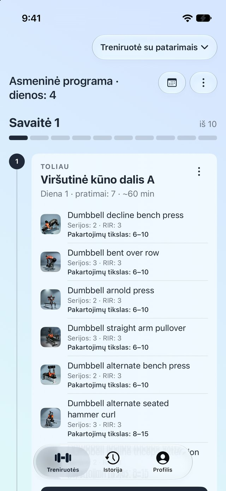
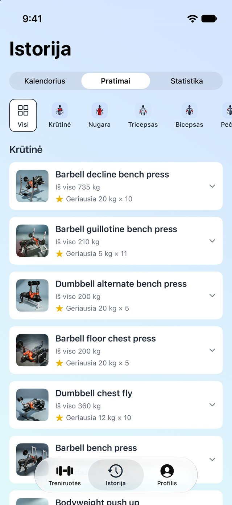
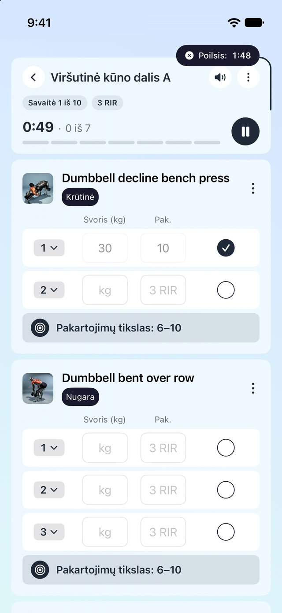
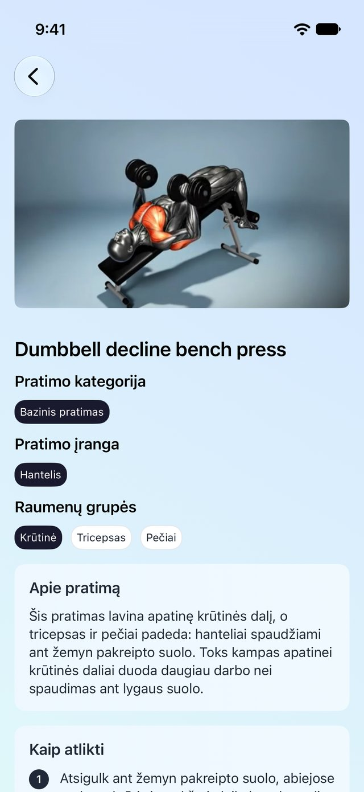

Atsakyk į kelis klausimus ir gauk kelių savaičių programą pagal savo tikslą. Kiekviena treniruotė pasako, kokį svorį kelti, kiek pakartojimų siekti ir kaip stipriai stengtis, o tavo atsiliepimai formuoja kitą savaitę.
Pradžia nemokama · Treniruotėms su patarimais reikia Pro prenumeratos



Prie tavęs prisitaikanti programa, žurnalas, kuris pildosi treniruotės metu, ir 300 pratimų, iš kurių tikrai gali mokytis.
Pasakyk LiftSmart savo tikslą, grafiką, įrangą ir raumenis, kuriems nori skirti daugiau dėmesio. Programėlė sukurs kelių savaičių programą, arba gali rinktis vieną iš 138 paruoštų planų.

Naršyk kelių savaičių planus ir atskiras treniruotes pagal lygį, tikslą ir įrangą. Patikusias išsaugok aplankuose ir pradėk bet kurią dieną.
Kiekvienam judesiui yra vaizdo įrašas, treniruojamų raumenų žemėlapis ir įranga, o taip pat aprašymas, atlikimo žingsniai ir patarimai, kad serijos metu nieko nereikėtų ieškoti.

Kad ir kaip treniruotumeisi, treniruotė su patarimais, planas ar greita treniruotė patenka į vieną istoriją. Asmeniniai rekordai aptinkami automatiškai.
Žurnalas lieka nemokamas visam laikui. LiftSmart Pro atveria treniruotes su patarimais ir neribotą išsaugotų treniruočių skaičių.
Pasirink pratimus ir pradėk, programos nereikia. Poilsio laikmačiai, serijų registravimas ir suvestinė pabaigoje.
Kiekviena užregistruota serija lieka visam laikui: kalendorius, kiekvieno pratimo istorija, pakeltas svoris pagal raumenų grupes.
Aptinkami automatiškai tą akimirką, kai rekordą pagerini, prie bet kokio pakartojimų skaičiaus.
Visa biblioteka su patarimais yra nemokama, kartu su paieška ir raumenų filtrais.
Nemokamai gali išsaugoti iki keturių treniruočių. Su Pro šios ribos nėra.
Treniruotės su patarimais: asmeninės programos ir visi kelių savaičių planai, o taip pat neribotas išsaugotų treniruočių skaičius.
Žurnalas užrašo, ką padarei. LiftSmart dar ir nusprendžia, ką daryti toliau: sukuria programą, nustato savaitės tikslus ir koreguoja juos pagal tavo atsiliepimus. Žurnalas taip pat yra programėlėje ir yra nemokamas.
Ne. Klausimyne pasirenki savo lygį, o pradedančiųjų planai prasideda lengvai ir sunkėja palaipsniui. Kiekvienas pratimas turi vaizdo įrašą ir atlikimo žingsnius.
Ne. Su greitomis treniruotėmis gali pasirinkti pratimus ir treniruotis visai be programos, o viskas vis tiek patenka į tavo istoriją.
Registravimas, istorija, asmeniniai rekordai, pratimų biblioteka ir iki keturių išsaugotų treniruočių yra nemokami visam laikui. LiftSmart Pro atveria treniruotes su patarimais ir neribotą išsaugotų treniruočių skaičių. Kainos rodomos programėlėje tavo valiuta.
Ne. Gali pradėti kaip svečias. Prisijungimas per Apple arba Google apsaugo tavo duomenis, jei pakeistum telefoną ar iš naujo įdiegtum programėlę.
iPhone su iOS 26 ar naujesne versija. Poilsio laikmačiai rodomi kaip Live Activities užrakinimo ekrane ir Dynamic Island.
Ne. Nėra jokių reklamų, duomenų pardavimo ar sekimo kitose programėlėse. Daugiau informacijos rasi Privatumo politikoje.
Tavo tikslas. Tavo programa. Tavo žurnalas.
Atsisiųsk išApp StoreSukurta iPhone · iOS 26 ar naujesnė · Pradžia nemokama, treniruotėms su patarimais reikia Pro prenumeratos